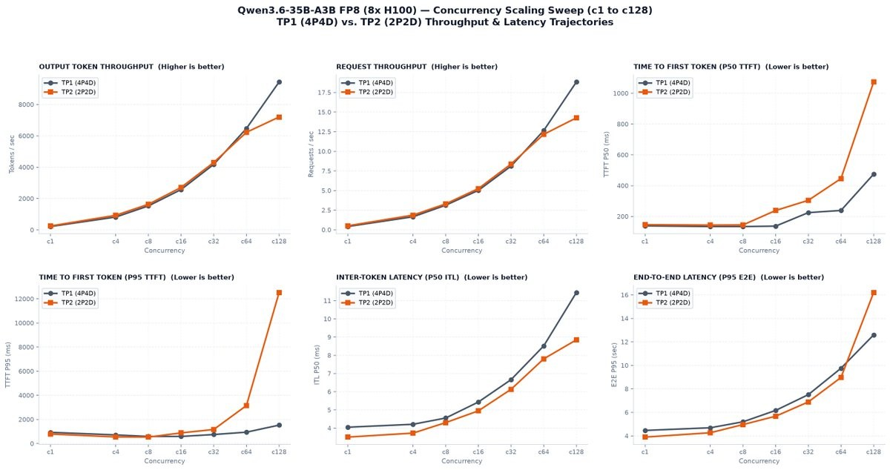
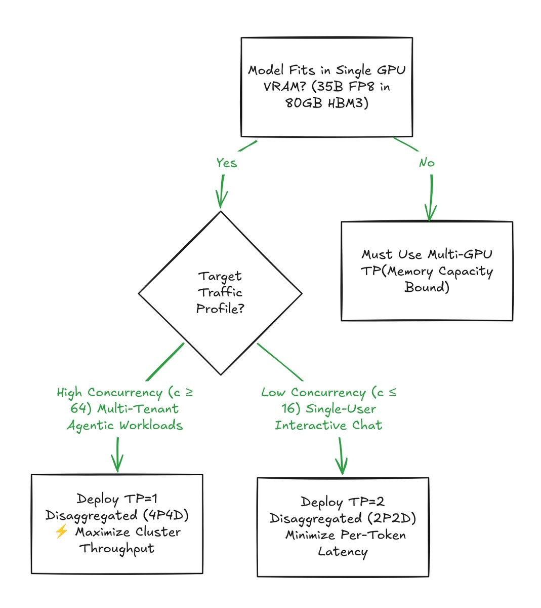
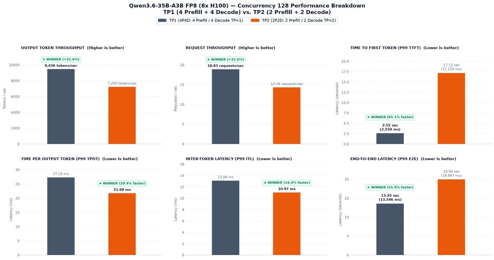
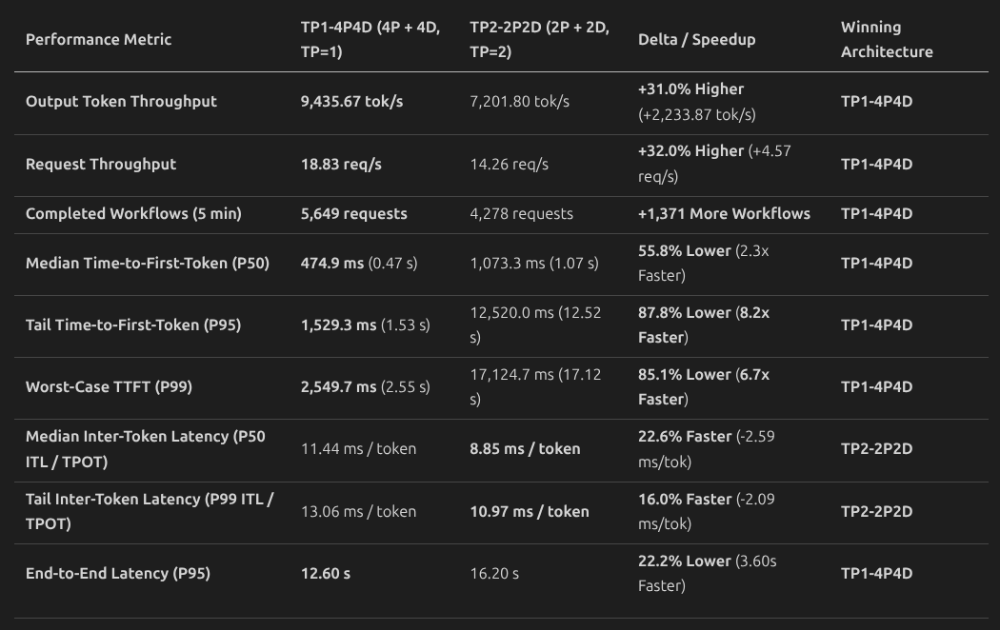
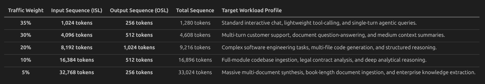
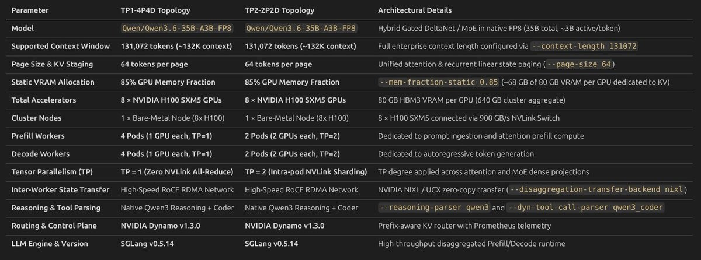
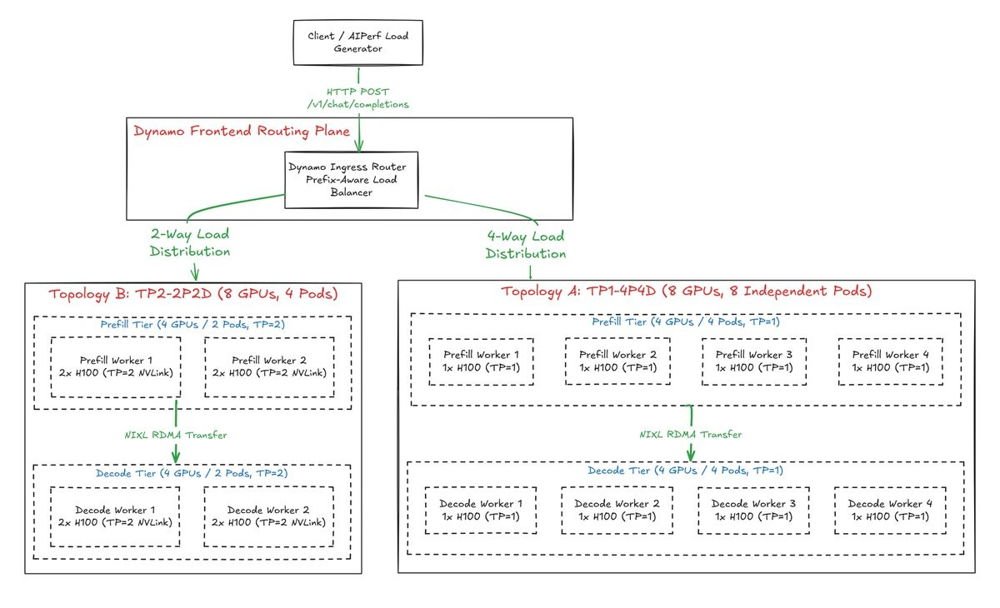
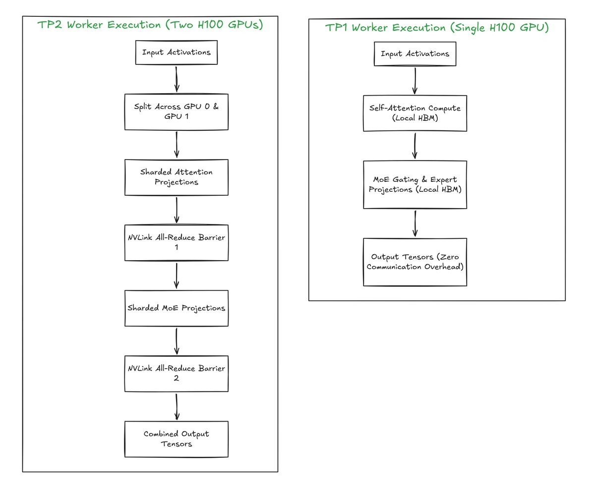

张量并行（TP）常被当成分布式大模型推理的默认扩展手段：GPU一多，工程师就本能地提高TP度。但在高并发的生产环境里，不看负载动态就加大张量并行，会严重损伤吞吐、引入昂贵的通信同步开销，并触发灾难性的Prefill队头阻塞。
本文在同一个固定硬件预算（8卡NVIDIA H100 SXM5集群）上，对比SGLang分离式部署的TP1（4 Prefill + 4 Decode Pod）与TP2（2 Prefill + 2 Decode Pod）：两者都服务Qwen/Qwen3.6-35B-A3B-FP8，上下文窗口131,072 token（约132K），静态显存比例0.85，状态传输走零拷贝的NIXL UCX RoCE RDMA。用AIPerf跑完c=1到c=128的并发扫描后，TP=1反超TP=2的临界点被精确定位：输出吞吐高31.0%，首token时延（P95 TTFT）快8.2倍。
在8卡NVIDIA H100集群上服务Qwen3.6-35B-A3B-FP8、并发持续攀升的场景下，评估卡内张量并行（TP2-2P2D）与卡间副本并行（TP1-4P4D）之间的性能取舍。
这组实验回答四个架构问题：
● 增加独立Prefill工作进程，会如何影响重负载下的排队延迟与首token时延（TTFT）？
● 并发到达什么阈值之后，卡内张量并行带来的延迟收益会被Prefill队头阻塞反超？
● 在峰值饱和下，单流生成延迟与集群总吞吐该如何权衡？
● 当稠密模型与MoE模型的权重能装进单卡显存时，什么时候该选张量并行而不是副本扩展？
在进入系统架构与基准结果之前，先看下表：它列出了两种拓扑共用的裸金属集群硬件、模型架构、互联配置与运行时参数。

要高效服务Qwen/Qwen3.6-35B-A3B-FP8，需要针对它的混合架构定制推理引擎。
在总计350亿参数中，每个token只会经由稀疏MoE层动态路由约30亿参数，同时还配有Gated DeltaNet循环线性注意力状态（HybridLinearKVPool）。
在原生FP8精度下，模型权重约占35 GB显存。每块NVIDIA H100提供80 GB HBM3，因此单卡就能轻松装下完整的35 GB权重，还剩下40 GB以上未分配显存。
把--mem-fraction-static 0.85打开后，SGLang会在扣除模型权重与CUDA执行缓冲之后，把总显存的85%（每卡约68 GB）分配给静态KV cache与Mamba线性循环状态池；单卡可维持约38万到45万个活跃上下文token的显存容量。
# 1. 配置部署所需的环境变量
export NAMESPACE=qwen32-bench
export EXP_DIR=/ephemeral/shared/qwen3.6-35b-a3b/sglang/disagg/tp1-4p4d
export DEPLOYMENT=q36-sgl-pd-tp1-4p4d
export GRAPH_LABEL="nvidia.com/dynamo-graph-deployment-name=${DEPLOYMENT}"
# 2. 部署 TP1-4P4D 服务图（8 卡上跑 4 个 Prefill + 4 个 Decode）
kubectl apply -n "$NAMESPACE" -f "$EXP_DIR/deploy.yaml"
# 3. 监控全部 8 个 worker Pod 的发布与就绪状态
kubectl get pods -n "$NAMESPACE" -l "$GRAPH_LABEL" -o wide -w
# 4. 切换拓扑时下线并释放集群资源
kubectl delete dynamographdeployment.nvidia.com "$DEPLOYMENT" \
-n "$NAMESPACE" --wait=true --ignore-not-found要理解两种配置在负载下为何表现迥异，得先看它们在8卡集群上的拓扑布局与执行机制：
两种架构的根本差别，在于GPU计算资源如何在卡内同步与卡间复制之间组织：
在TP2-2P2D中，每个工作Pod绑定两块通过高速NVLink相连的H100。注意力投影矩阵、前馈层与MoE路由矩阵都被切分到两块设备上。
于是每一层Transformer都要用NVLink上的all-reduce同步中间激活张量。分片虽然降低了单卡的计算量、让孤立单请求的前向更快，却在整张执行图上留下了持续的同步屏障。
更关键的是，把8块GPU收拢成2卡一组的Pod，会把集群的副本数压到只有2个prefill工作进程与2个decode工作进程。
而在TP1-4P4D中，每个工作Pod完全跑在单块H100上，卡内通信开销为零。注意力计算、线性状态更新与MoE路由全部在本地寄存器和HBM3内完成；因为没有all-reduce屏障，GPU计算引擎能以100% 占空比运行。
最重要的是，TP=1让集群的并发能力直接翻倍：4个独立的prefill工作进程与4个独立的decode工作进程。
· · ·

完整的部署清单以可直接运行的Kubernetes recipe形式组织：
● TP1-4P4D部署清单： deploy.yaml

● TP2-2P2D部署清单： deploy.yaml
● AIPerf基准测试套件： perf.yaml

两种拓扑的清单都在同一套仓库里，直接按URL取用即可：
https://github.com/Prasannajaga/deployment-guide/blob/main/models/qwen3.6-35B-A3B/sglang/disagg/tp1-4p4d/deploy.yaml
https://github.com/Prasannajaga/deployment-guide/blob/main/models/qwen3.6-35B-A3B/sglang/disagg/tp2-2p2d/deploy.yaml
https://github.com/Prasannajaga/deployment-guide/blob/main/models/qwen3.6-35B-A3B/sglang/disagg/tp1-4p4d/perf.yaml
· · ·
为评估两种拓扑从单用户执行到集群极限饱和的扩展表现，我们用AIPerf跑了一套生产级混合序列分布的基准：
● 模型与分词器： Qwen/Qwen3.6-35B-A3B-FP8，使用官方分词器权重
● 负载阶梯： 5档混合序列分布（1K到32K上下文长度），模拟真实的Agent流量
● 前缀复用与分区： 8个前缀组，目标前缀token复用率75%
● 并发阶梯： 1、4、8、16、32、64、128
● 执行控制： 确定性随机种子（random_seed: 42）、16个预热请求、3600秒超时上限
这套混合序列分布是刻意设计的，用来同时压满集群的计算强度与显存占用：

把高频短请求（1K–4K）与长上下文重负载（8K–32K）混合，并叠加8个前缀组、75% 的前缀复用模式，基准就能复现生产Agent流量的真实形态：前缀缓存、prefill计算排队与自回归生成同时发生。
在峰值多用户饱和（c=128）下，TP1-4P4D与TP2-2P2D的性能差距被彻底拉开。下面的性能看板与实测记分卡汇总了总吞吐、排队延迟与单token生成速度：
要理解TP1为何在大规模下胜出，得看GPU执行prefill与decode的方式差异。
1 Prefill是计算密集型，Decode受显存带宽限制
Prefill把整个prompt并行吞进去，靠大规模矩阵乘法把H100的Tensor Core打满；当一个prefill工作进程在处理prompt时，它的计算引擎被完全占住，后续请求只能排队等待。
相反，自回归decode每个流每步只生成一个token。因为单token的算术量很小，decode的执行被HBM3显存带宽限制住：GPU每一步都要把35 GB的模型权重从显存里读一遍。
2 低并发（c ≤ 32）下TP2为何更快
流量清淡时，GPU算力大量闲置。TP2把模型切到两块GPU上，每块GPU需要读取的权重数据减半（约17.5 GB），单token生成延迟从11.44 ms降到8.85 ms（提速22.6%）。
在低到达率下，TP2的两个prefill Pod很少同时被占满，排队延迟几乎为零（P95 TTFT为16–21 ms）。
3 高并发（c ≥ 64）下的反超与塌陷
并发继续爬升，prefill的入口容量就成了硬瓶颈。在TP2-2P2D里，所有进入的请求都必须挤过仅有的两个prefill Pod。
长prompt（最长32K token）会长时间霸占Tensor Core，造成严重的队头阻塞：短请求被排在它们后面。到c=64时，TP2的P95 TTFT暴涨40倍到842 ms；到c=128时更是膨胀到12.52秒。
这种prefill排队还会引发decode饥饿悖论：prefill工作进程来不及处理并交接KV cache，decode工作进程做完手上的任务后就只能空等RDMA状态传输，把TP2的吞吐压在7,202 tok/s。TP1-4P4D则提供4个独立prefill Pod，把队列深度减半，将P95 TTFT保持在1.53秒（快8.2倍），并让4个decode工作进程持续吃饱，达到9,436 tok/s（+31.0%）。
此外，TP1消除了TP2每token所需的128次NVLink all-reduce同步屏障，让每块GPU都能以最高的本地效率运行。
· · ·
| 指标（c=128） | TP1-4P4D | TP2-2P2D |
|---|---|---|
| 输出token吞吐 | 9,436 tok/s | 7,202 tok/s |
| 请求吞吐 | 18.83 req/s | 14.26 req/s |
| P95 TTFT | 1.53 s | 12.52 s |
| 端到端时延（P95） | 12.60 s | 16.20 s |
| 单token生成延迟（低并发） | 11.44 ms | 8.85 ms |
这次实验说明：更高的张量并行并不天然带来更高的集群吞吐。设计生产级LLM服务集群时，可以套用下面这套决策框架：

这样的显存占用，从根本上把张量并行与物理硬件必要性解耦了。
在分布式LLM服务中，我们之所以经常默认使用张量并行，是因为庞大的模型权重（比如FP16下的70B模型）超出了单卡显存上限，多卡分片成为无法回避的容量约束。
但当权重能从容装进单块加速器时，张量并行就不再是容量要求，而变成了一个明确的架构取舍：单token计算延迟与集群级副本吞吐之间的取舍。选择TP=2会把线性投影切分到两块NVLink相连的GPU上，让单设备算术量减半，从而加快孤立请求的单层前向。
但这种计算加速的基础设施代价很高：它在每一层Transformer都引入同步的all-reduce通信屏障；在固定8卡预算下，还会把集群副本总数从4个Prefill + 4个Decode Pod直接砍半到各2个。
反过来，TP=1完全消除了卡间通信开销，让计算引擎跑满本地硬件效率，并把整个集群的prefill派发能力翻倍。
结论是：当显存不构成约束时，张量并行只适合作为订阅不足场景下的延迟优化器；而副本并行（TP=1）才能在生产负载下最大化并发韧性与集群总吞吐。

这套基准证明：在8卡NVIDIA H100集群上服务Qwen3.6-35B-A3B-FP8并面对多用户并发流量时，分离式TP1（4P4D）是更优的生产服务架构。
通过消除NVLink all-reduce同步屏障、并提供4个独立的prefill与decode工作进程，TP1带来：
● +31.0% 输出token吞吐：（c=128时9,436 tok/s vs 7,202 tok/s）
● +32.0% 请求吞吐：（18.83 req/s vs 14.26 req/s）
● 8.2倍更快的首token时延：（P95 TTFT 1.53 s vs 12.52 s）
● 22.2% 更快的端到端时延：（12.60 s vs 16.20 s）
设想一个模型，权重只占80 GB NVIDIA H100中的约30–35 GB：每块GPU上其实已经有约45–50 GB空闲显存可以用来做KV cache。仅因为手上有几块GPU就把模型按TP=2切开，是一笔糟糕的买卖：副本Pod总数减半，还要额外付出成百上千次NVLink all-reduce同步停顿。
让每个worker保持TP=1，你就能得到双倍的worker Pod、零通信开销，以及服务高并发生产负载所需的最高吞吐。
这种架构效率在与分层内存体系结合时会进一步放大。正如我们在上一个关于分层CPU KV卸载（HiCache）的实验中展示的：把被驱逐的前缀状态卸载到主机DDR5内存，可以在不增加加速器硬件的前提下解锁巨大的有效上下文容量，并驱动更高的持续吞吐。把TP=1副本并行与主机内存卸载结合起来，就能最大化每瓦token效率：单卡worker消除了设备间同步停顿，让Tensor Core保持最高占空比饱和运行；CPU卸载则避免了重复的prefill重算，从整个集群里榨出每瓦服务吞吐的极限。
https://x.com/jaga_prasanna/status/2093217133841064233?s=20
在下一篇里，我们会深入剖析用于KV cache的NVIDIA NIXL在RoCE v2 RDMA上的表现，演示如何在Dynamo worker上埋设Prometheus遥测，并构建生产级Grafana看板，用于追踪大规模下的实时传输延迟、带宽与CPU主机内存缓存。
感谢读到这里 🙏

参考：https://x.com/jaga_prasanna/status/2094419634489549223